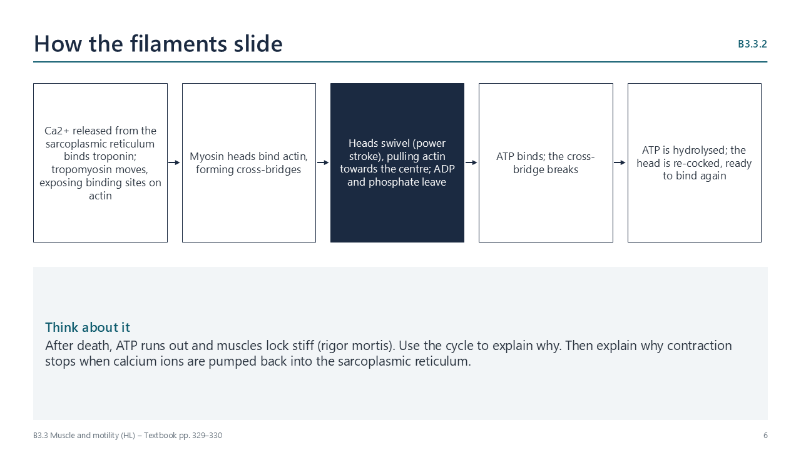

Written for this site from the class slides, with textbook page references for each statement. The chapter is on pages 326–340 of the course textbook. Image credits are on slide 16.
Movement
B3.3.1
Motile and sessile organisms
pp. 326–327
All organisms move. Motile organisms, such as whales, move from place to place. Sessile organisms, such as barnacles and corals, stay fixed but move parts of their bodies to feed, and often have motile larvae.
B3.3.9
Reasons for locomotion
pp. 338–339
Animals move to forage (bees collecting nectar), escape danger (impala fleeing lions), find a mate (male moths following scent) and migrate (humpback whales moving between feeding and breeding waters).
Muscle
B3.3.2
Sliding filament model
pp. 327–330

Myofibrils are chains of sarcomeres with thick myosin and thin actin filaments. Calcium ions bind troponin, moving tropomyosin to expose binding sites on actin. Myosin heads bind, swivel and pull actin towards the centre; ATP breaks each cross-bridge and re-cocks the head. Sarcomeres shorten while the filaments stay the same length.
B3.3.3
Titin and antagonistic muscles
pp. 330–331
Muscles only exert force when they contract, so they work in antagonistic pairs, each stretching the other. The huge protein titin stores energy when stretched, helps the sarcomere recoil and prevents overstretching.
B3.3.4
Motor units
pp. 331–332
A motor unit is one motor neuron and all the muscle fibres it controls, connected at neuromuscular junctions. All fibres in a unit contract together. Small units give fine control; using more units gives more force.
B3.3.8
Intercostal muscles
pp. 336–337
The external and internal intercostal muscles have fibres running in different directions, so they move the ribcage in opposite directions. When one layer contracts it stretches the other, storing energy in its titin.
Skeletons, joints and swimming
B3.3.5
Skeletons and levers
pp. 332–334
Arthropods have an exoskeleton, with muscles attached inside; vertebrates have an endoskeleton, with muscles attached to bones by tendons. Bones act as levers, with the joint as the pivot.
B3.3.6
The hip joint
pp. 334–335
At the hip, the head of the femur fits a socket in the pelvis. Cartilage reduces friction, synovial fluid lubricates, ligaments join bone to bone, and muscles pull on the bones through tendons.
B3.3.7
Range of motion
pp. 335–336
Ball-and-socket joints (hip, shoulder) move in three planes; hinge joints (knee, elbow) move mainly in one. Range of motion can be measured with a goniometer and is affected by training, age and injury.
B3.3.10
Marine mammals
pp. 339–340
Whales and dolphins have a streamlined body, forelimbs modified as flippers, a tail fluke moved up and down, and a blowhole with an airway separate from the gut, so they can breathe at the surface between dives.
Videos
Select a video to play it here. Select it again to close it.
Print this guide and complete it as you work through the slides and videos. It asks for your own explanations, so close the notes while you try each section.
A printable worksheet covering all ten statements, from quick recall to data questions and a longer answer. It has 40 marks and takes about 40 minutes, or you can do one section at a time.